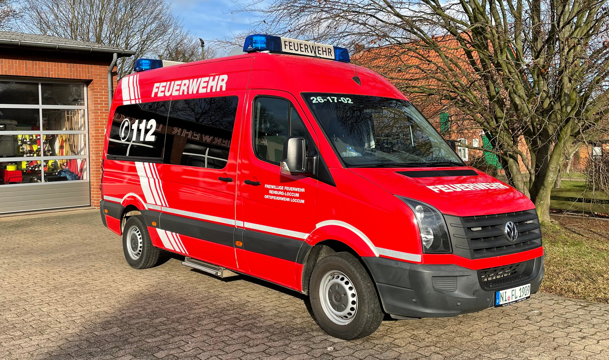

Der Mannschaftstransportwagen (MTW) wurde 2012 vom Hersteller VW gebaut und ist seit 2014 im Dienst für die Feuerwehr. Er kann als Besatzung 9 Personen (ein Gruppenführer, acht Mannschaftsmitglieder = eine Gruppe) transportieren. Das Fahrzeug verfügt über eine Zusatzausrüstung und dient so im Einsatz als Einsatzleitwagen. Auch die Jugendfeuerwehr nutzt dieses Auto bei Ausflügen zum Transport der Jugendlichen.
Das Löschgruppenfahrzeug (LF) wurde 2002 vom Hersteller Iveco gebaut und hat einen Dieselmotor mit 3.908 cm³ Hubraum und 136 PS. Es kann als Besatzung 9 Personen (ein Gruppenführer, acht Mannschaftsmitglieder = eine Gruppe) transportieren. Auf diesem Auto ist der Technische Hilfeleistungssatz (Schere, Spreizer, etc.) der Stadtfeuerwehr verlastet. Außerdem verfügt es über eine Tragkraftspritze und 120 Liter Schaummittel. In dem Audio kann man hören wie sich das LF beim starten anhört.
Das Tanklöschfahrzeug (TLF) wurde 1994 vom Hersteller Iveco gebaut und hat einen Dieselmotor mit 6.128 cm³ Hubraum und 160 PS. Es kann als Besatzung 3 Personen (ein Maschinisten, zwei Mannschaftsmitglieder = ein Trupp) transportieren. Der (Wasser) Tank bei diesem Auto beträgt 1800 Liter und es verfügt über eine festverbaute Feuerlöschkreiselpumpe, mit einem Nennförderstrom von 800 l/min bei einem Nennförderdruck von 8 bar.
Über den Button können sie eine PDF mit vielen weiteren Informationen herrunterladen.